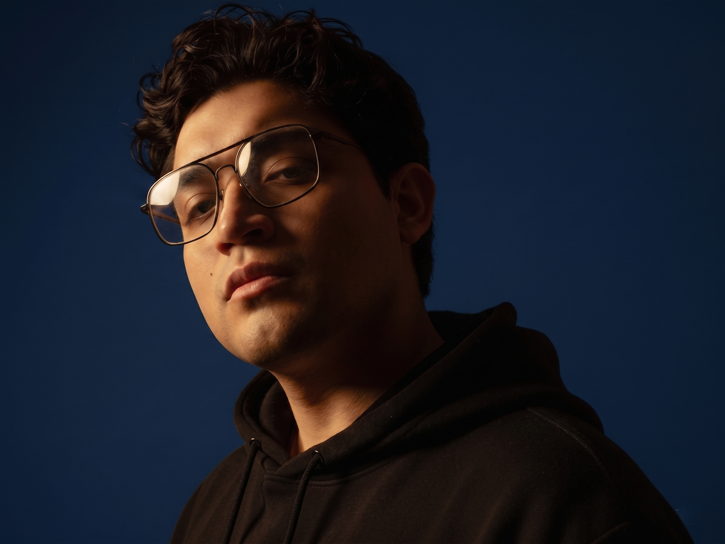

SOBRE MÍ
Soy Eduardo Valera (Ed).
Desarrollador Web Full Stack Junior en formación, con interés en construir aplicaciones completas: desde la interfaz hasta la lógica del servidor y la base de datos.
Me gusta desarrollar proyectos con estructura clara, buenas prácticas y enfoque en funcionalidad. Disfruto trabajar tanto el lado visual (UI) como la parte lógica (APIs / datos).
Actualmente estoy mejorando mis habilidades en desarrollo web y ampliando mi stack con nuevas herramientas, mientras construyo proyectos para seguir subiendo de nivel.
